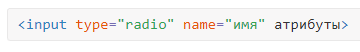
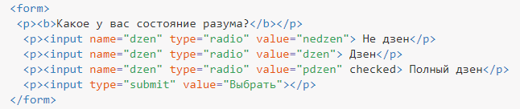

Переключатели
Переключатели (жарг. радиокнопки) — это простой способ, позволяющий пользователям сделать быстрый выбор из небольшого списка вариантов. Переключатели дают пользователю выбрать только один вариант в отличие от нескольких.
Чтобы создать переключатель, используется элемент <input> со значением radio у атрибута type.

Атрибуты переключателей перечислены в табл. 1.
| Атрибут | Описание |
|---|---|
| name | Имя группы переключателей для идентификации поля. Поскольку переключатели являются групповыми элементами, то имя у всех элементов группы должно быть одинаковым. |
| disabled | Блокирует переключатель для выбора. |
| form | Идентификатор формы для связывания кнопки с элементом <form>. |
| type | Для переключателя значение должно быть radio. |
| checked | Предварительное выделение переключателя. По определению, набор переключателей может иметь только один выделенный пункт, поэтому добавление checked сразу к нескольким полям не даст особого результата. В любом случае, будет отмечен элемент, находящийся в коде HTML последним. |
| value | Задаёт, какой текст будет отправлен на сервер. Здесь уже каждый элемент должен иметь свое уникальное значение, чтобы можно было идентифицировать, какой пункт был выбран пользователем. |
| autofocus | Переключатель получает фокус после загрузки документа. |
| required | Выбор переключателя перед отправкой формы становится обязательным. |
Как обычно, переключатели нельзя вкладывать внутрь ссылок и кнопок.
Создание группы переключателей показано в примере 1.
Заметьте, что для работы этого элемента формы, ваш HTML-код должен сгруппировать список переключателей вместе. Это достигается с помощью одного и того же значения для атрибута name.
В данном примере значение атрибута name для всех переключателей одинаково, именно в таком случае браузер понимает, что переключатели связаны между собой и помечает только один пункт из предложенных.
Поскольку все переключатели используют одинаковое значение атрибута name (в данном случае значение dzen), выбор одного из вариантов отменит все остальные. Переключатели являются взаимоисключающими.
С текстовыми полями их значение определяется тем, что пользователь в них набирает; с переключателями пользователь делает множественный выбор. Таким образом, мы должны определить входное значение. Используя атрибут value мы можем установить конкретное значение для каждого элемента <input>. Значение атрибута value должно различаться, чтобы обработчик формы мог понять, какой вариант выбран пользователем.
Кроме того, для предварительного выбора переключателя мы можем использовать логический атрибут checked.
Пример 1. Создание переключателей
